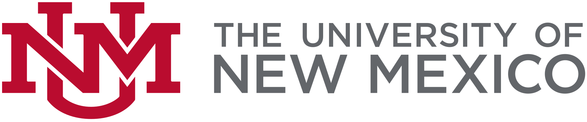
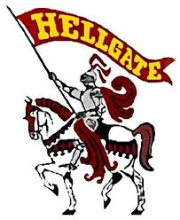

About Mari
I knew I wanted to focus on STEM since I was a little girl but had a difficult time choosing a major when coming to college. I realized that my knack for computers, aptitude to see patterns, and love of puzzles was a perfect fit to study Computer Science. Even though my skills are for computer science, I have an unwavering fascination with all things space. From planetarium visits at my local museum to astronomy units in science classes to watching space movies, my interest in space has been around for a long time. My dream is to one day use my skills to help in space exploration and educating others.
Besides space, I am still interested in general software engineering and machine learning. I believe technology is a major human asset that carries great potential in not only making our lives easier but solving issues that were once seen as irresolvable. My computer science skills will allow me to model real-life situations and help look for patterns in our daily lives, predict what can happen based on those patterns, and better prepare us for the future.
Education
University of New MexicoAlbuquerque, NMMajor: BS Computer Science Minor: Japanese GPA: 3.93/4.0 Expected graduation: May 2022 |
 |
Hellgate High SchoolMissoula, MTGPA: 4.0/4.0 2014-2018 |
 |
Extracurriculars
Social Media Committee
Society of Women Engineers, UNM Chapter -- Fall 2019 - Present- Social Media Committee, Member
- Created new club website using WordPress
- Manage social media content on Instagram, Facebook, Twitter, LinkedIn to spread message and engage with students
Division 1 Student-Athlete
UNM Women's Swimming & Diving Team -- Fall 2018 - Present- NCAA Division 1 scholarship athlete
- A-finalist in the 400 IM (significant point contributor to team) and B-finalist in the 200 IM at the 2020 Mountain West Conference Swimming & Diving Championships.
- Train 20 hours per week, not including travel and competition, while maintaining a full-time student course load.
Work
Software Intern - Digital Marketing
Be Greater Than Average, LLC
Albuquerque, NM -- July 2020 - Present- Conduct a social media competitive analysis for 8 business competitors to find where improvements can be made on social media to increase reach engagement with potential customers
- Created a web scraping program to research over 60 keywords and phrases for search engine optimization analysis.
- Assisted in data management using Zoho Customer Relationship Management software.
Cashier
Lowe's
Bozeman, MT -- May 2019 - Aug 2019- Handled cash, assisted customers, operated transactions.
- Full-time (40 hours/week) temporary seasonal associate position.
Other Experiences
NM Hacks Mentor
Mentor, September 2020-Present- Mentor high school students during Major League Hacking's Local Hack Days by attending workshops with them, providing resources, and providing encouragement.
CodePath's Mobile App Design Course - iOS
Participant, February-March 2020- CodePath's 8-week Mobile App Design Workshop program that involved building a functional flashcard app from scratch.
Imager at the Museum of Southwestern Biology Herbarium
Albuquerque, NMVolunteer, Fall 2018
- Assisted in cataloguing and imaging plant specimens for a project to digitalize Herbarium records and update specimen database in Excel.
Awards and Honors
Etter Scholarship -- University of New Mexico School of Engineering scholarship for full-time students admitted into and making satisfactory progress towards an engineering or computer science degree.
NMOST Scholarship -- 2020 Advancing Young Women in STEM Scholarship for passion and commitment to the pursuit of knowledge in the STEM fields.
Lobo Scholars Program Fellow -- nominated as a fellow representing the top 5% of student-athletes at the University of New Mexico in terms of academic accomplishment and potential.
UNM School of Engineering Dean's List --Fall 2018, Spring 2019, Fall 2019.
UNM Amigo Scholarship for academic achievement for out-of-state students.
Hobbies and Interests
I love puzzles! My favorites are logic, cryptic, and mechanical puzzles (especially jigsaw puzzles). I am currently learning how to solve a Rubik's Cube.
My favorite outdoor activities include biking and hiking.
My favorite books/movies/series/shows are Harry Potter and Doctor Who!